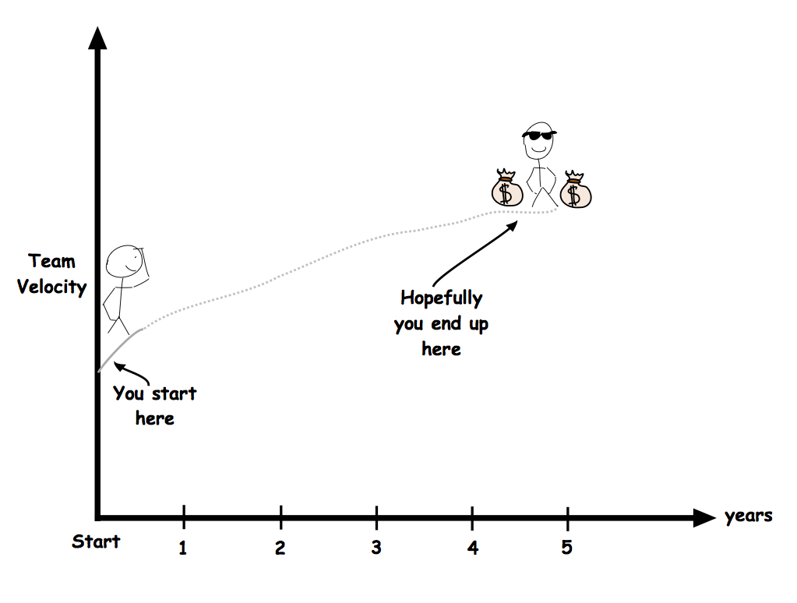
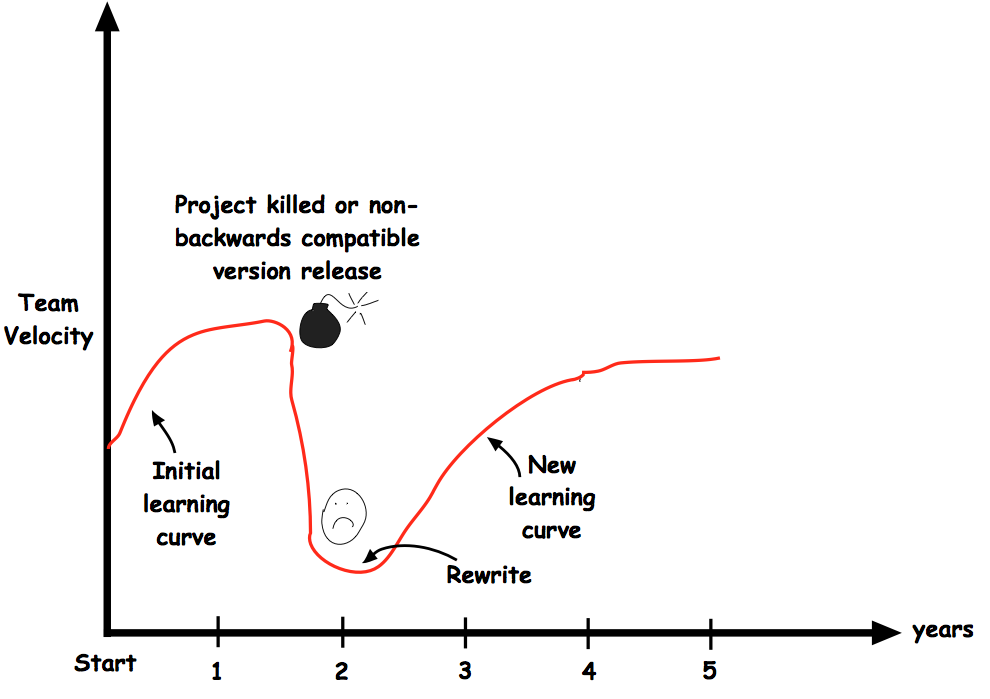

class: front-page # Skaler frontend uten å måtte kaste alt ## JavaZone 2015 Kent Andersen<br> <span class="today-date"></span> --- class: cols two center middle .col[  ] -- .col[  ] --- class: center middle  --- class: center middle  ??? Syntax highlight sier bra «snakkes, dette får du fikse alene» --- class: center middle  ??? * Transkrivert et kranglende ekstepar * gjørt random edits til det kompilerte --- class: center middle # hvorfor feiler JavaScript lenge før andre språk? --- # hvorfor feiler JavaScript lenge før andre språk? <br> <img id="danse-ape" src="images/danse-ape.png" style="display:block;margin:0 auto;cursor:pointer"> --- # hvorfor feiler JavaScript lenge før andre språk? -- ``` typeof {} // "object" ``` -- ``` typeof [] // "object" ``` -- ``` typeof (new function(){}) // "object" ``` -- ``` typeof null; // "object" ``` ??? Det har mange feil og uforutsett oppførsel som vi må jobbe oss rundt klassisk for alle u-typede språk --- # uerfarne utviklere ``` var hash = {}; var summarize = function(arr) { var key = JSON.stringify(arr); var value = hash[key]; if(!value) { value = hash[key] = somethingExpensive(arr); } return value; } ``` ??? eneste memoize funksjonen som er tregere enn bruteforce --- class: middle <blockquote style="font-size:2.5em"> «JavaScript er for evneveike utviklere som ikke klarer å kode Java™» </blockquote> <div style="display:block;text-align:right">Ikke Navngitt Java-utvikler</div> --- class: cols two middle <div class="col"> <img src="images/kent.jpg" style="border-radius:1000px"></div> </div> <div class="col" style="margin-top:11%;font-size:2.5em;"> Kent Andersen<br> <small style="font-size:0.7em">Evneveik JavaScript-utvikler</small> </div> --- class: cols three middle .col[  ] .col[  ] .col[  ] --- ??? Vi trenger bare et javascript rammeverk -- class: center middle  --- class: center middle  --- class: center middle  --- # JavaScript-rammeverk hipster-o-meter --  ??? Alle vet at hipsterfaktor måles i skrivemaskiner og kopper med økologisk kaffe --- class: center middle  --- class: center middle # Takk for meg? -- ## ikke helt --- class: center middle  ??? * Alle som har startet i den ene enden helt uten en plan har opplevd dette * Kan fungere på små prosjekter, todo-apps * Men det er ikke det vi sliter med --- class: center middle ??? Bygger du alt rundt et dårlig konspet så blir resultatet skit --  --- class: fullscreen <iframe src="http://2002.javazone.no/" /> --- # Tidene forandrer seg ```html <html> <head> <title>KentBank 1</title> <link type="text/css" rel="stylesheet" href="style.css" /> </head> <body> <ul class="meny"> <li> Lån </li> <li> Sparing og pensjon </li> </ul> <div class="innhold"> Det kan være vanskelig å spare, men å bruke penger går ofte helt av seg selv. Men hva hvis du kunne spart litt hver gang du bruker kortet? </div> <div class="bunn"> © KentBank 1 | Personvern og sikkerhet | Informasjonskapsler </div> </body> </html> ``` ??? Her var det flotte rammeverk som Beehive, JSF og Struts som bestemmer --- # Tidene forandrer seg ```html <html> <head> <title>KentBank 1</title> <link type="text/css" rel="stylesheet" href="style.css" /> <script type="text/javascript" src="app.js"></script> </head> <body></body> </html> ``` --- # Tidene forandrer seg  --- class: center middle  ??? Opprettet et skille mellom frontend backend --- class: center middle  ??? * det var kansjke litt dystert * frigjort oss fra backend * ta valg som kun kommer frontend til gode --- class: middle <blockquote style="font-size:2em"> «With Great Power Comes Great Responsibility» </blockquote> <div style="display:block;text-align:right">Uncle Ben</div> ??? Litt som å flytte hjemmefra Husk på hva Uncle Ben har sagt --- name: framework-history class: cols three # Flyttet hjemmefra <div class="col"> <h2>2010</h2> <img src="images/hotrightnow1.png"> </div> <div class="col"> <h2>2011</h2> <img src="images/hotrightnow2.png"> </div> <div class="col"> <h2>2012</h2> <img src="images/hotrightnow3.png"> </div> <div class="col"> <h2>2013</h2> <img src="images/hotrightnow4.png"> </div> <div class="col"> <h2>2014</h2> <img src="images/hotrightnow5.png"> </div> <div class="col"> <h2>2015</h2> <img src="images/hotrightnow6.png"> </div> ---  ---  --- class: center middle  ??? Minner veldig om et kjent arkitekturparadigme --- class: center middle  ??? * Det vil si at skal vi bytte rammeverk, er vi nøtt til å skrive alt på nytt * Jøran og Stian skal fortelle hvordan de brakk opp posten i flere biter * Løser vi dette problemet på infrastruktur-nivå slipper vi å forholde oss til det i hver applikasjon --- class: center middle  --- class: center middle bekk-top # TAKK! Kent Andersen --- --- --- #Ønskesituasjon 5 min * gjennbrukbar kode * delte moduler * gode abstrakter * versjonering --- #Separation of concern 5min * plan for obsolation --- #Separation of concern 5min * slutt med monolittisk frontend kode. Splitt flere skjermbilder (use-case) i flere filer * del opp skjermbildet i flere moduler (meny, kontoer, applikasjon etc) som har eget release løp. * avgrens bruken av rammeverk i for hver modul, ikke alle trenger backbone --- #Prototype-basert arv 5min * abstrakter i JavaScript * løsning i forskjellige rammeverk, backbone, angular, react * hvordan skrive --- #Oppdeling av moduler 10min * introduser browserify * splitte opp frontend i flere filer. * introducer begrepe mixins * domens mot teknologi, ingen /js og /template mappe * import av moduler * distribusjon av biblioteker --- #Skille mellom app kode og lib kode 10min * dele bibliotek runtime * bruk av externals i browserify * versjonering av biblioteker * lasting av biblioteker * håndtering av browser cache --- #vår enderlig løsning 5min * hvordan sider blir lastet av sider og resurser blir valgt cache-busting * cdn server * deling av runtime-moduler --- #hvordan blir dette Klassebasert arv i EcmaScript 6 5min * klasser i javascript * import av moduler * annet snaks i EcmaScript 6 * introduser babel.js cross-compiler